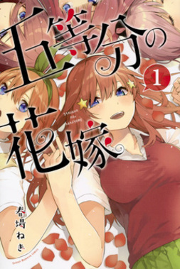
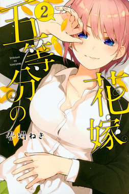
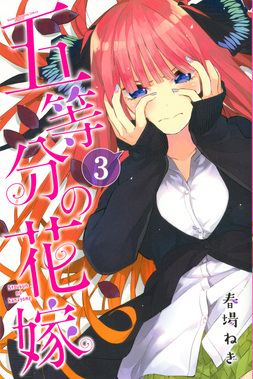
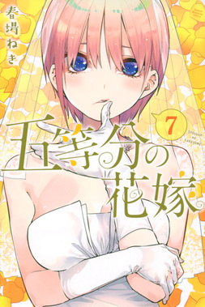
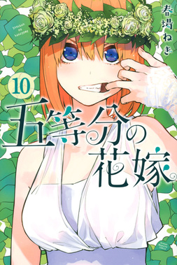
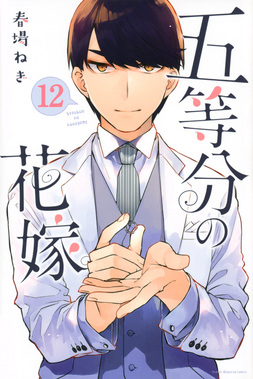
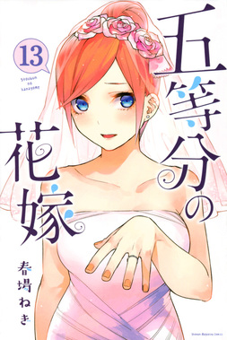
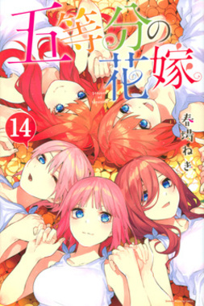

五等分の花嫁
作者:春場ねぎ
 ぐらんぶる
ぐらんぶる
あらすじ
上杉風太郎は結婚式当日、式場の部屋で微睡んでいた。その時彼は、妻と初めて出会った時のことを思い出していた。 当時、風太郎は高校2年生で、成績は優秀だが家計は困窮していた。 ある日、彼は中野五月という転校生と出会い、彼女から勉強を教えてほしいと頼まれるが、風太郎はそれを断った。 その一言がきっかけで彼女との初めての出会いは波乱含みとなった。 家計の借金返済のため、風太郎は妹から富豪の娘たちの家庭教師の仕事を紹介される。 彼の仕事は五つ子姉妹全員を高校卒業させることだったが、五人は全員が落第寸前で、勉強意欲も乏しい状態だった。 しかし、風太郎は夏祭りなどで彼女たちとの交流を深め、四女・四葉や三女・三玖、長女・一花の信頼を得ることに成功する。 次女・二乃と五女・五月は当初から協力的ではなく、家庭教師を始めて間もない中間試験で五人全員の赤点回避が条件とされる状況に追い込まれる。 風太郎は苦悩し、最初はそのまま去ろうとするが、意外にも二乃が「個別の1科目だけだが赤点を回避した」と報告し、風太郎を支えることになる。
単行本 全14巻